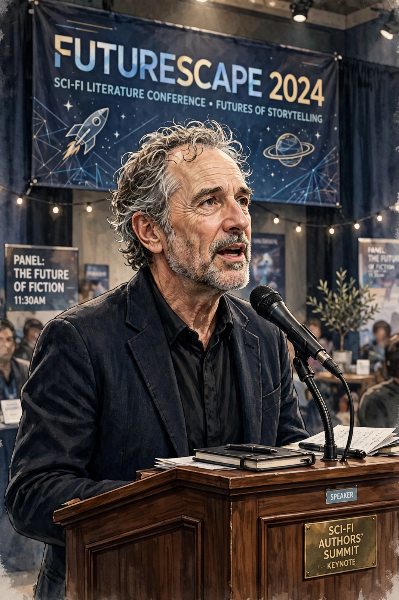

Michael Bruce Sterling (born April 14, 1954) is an American science fiction author known for his novels and work on the Mirrorshades anthology. This work helped to define the cyberpunk literary genre. He has also written and spoken extensively on design futures and new media, popularising terms such as "spime" for trackable manufactured objects.

| Born | April 14, 1954, Brownsville, Texas, U.S. |
|---|---|
| Occupation | Writer, speaker, futurist |
| Genre | Science fiction, cyberpunk |
| Notable works | Schismatrix (1985); The Zenith Angle; Schismatrix Plus |
| Awards | Hugo Award (1997, 1999); Arthur C. Clarke Award (1990, Schismatrix Plus shortlist context) |
Sterling's first novel, Involution Ocean (1977), was followed by The Artificial Kid (1980) and Schismatrix (1985), the last set in his Shaper/Mechanist universe of posthuman factions and widely regarded as one of the defining works of cyberpunk. As editor of the anthology Mirrorshades (1986), and through his fanzine Cheap Truth, written under the name Vincent Omniaveritas, Sterling acted as the movement's polemicist and publicist alongside William Gibson and John Shirley. He co-wrote The Difference Engine (1990) with Gibson, a steampunk alternate history. Later novels include Holy Fire (1996), Distraction (1998), Zeitgeist (2000), The Zenith Angle (2004) and The Caryatids (2009). He won Hugo Awards for the novelettes "Bicycle Repairman" (1997) and "Taklamakan" (1999).
Sterling wrote The Hacker Crackdown (1992), a non-fiction account of early cyberspace law enforcement, released electronically free of charge. He founded the Viridian design movement (1998–2008) to explore green design, delivered its celebrated closing remarks in 2008, and has blogged for Wired magazine's "Beyond the Beyond" since 2003. He has lived in Belgrade and Turin with his wife, the Serbian author and filmmaker Jasmina Tešanović.